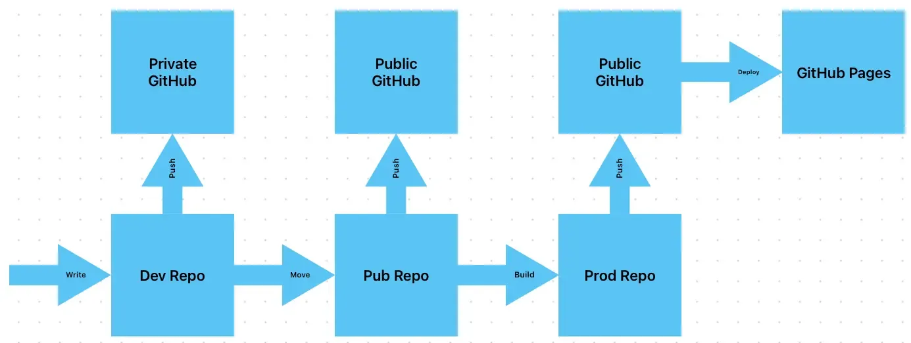

Changing How I Host This Site
I’ve been pretty happy with my website. The way I hosted it though, that’s a different story. To be clear, I’m not changing web hosts, my frustration is all my doing. I’m just de-shitting how I use my web host.
I’m using GitHub to host my site. And the way I was hosting it was, ass. I was using three repos. A dev, pub, and prod repo. Dev is for post drafts, pub was a public repo of my Hugo1 project, and prod was where my built site was hosted from. This was just too much.

So, I killed the prod repo. My site is now hosted from a folder in the pub repo. I did have to change where Hugo puts a build. This was just a simple line in my config publishDir = 'docs'. I just had to tell GitHub to host grab the files form the docs folder, and put my CNAME2 file in the static folder.
So instead of hitting build, moving the files, and pushing. I just have to build, and push. I should have done this sooner.